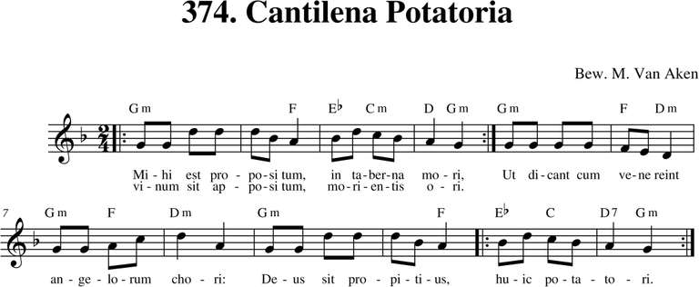
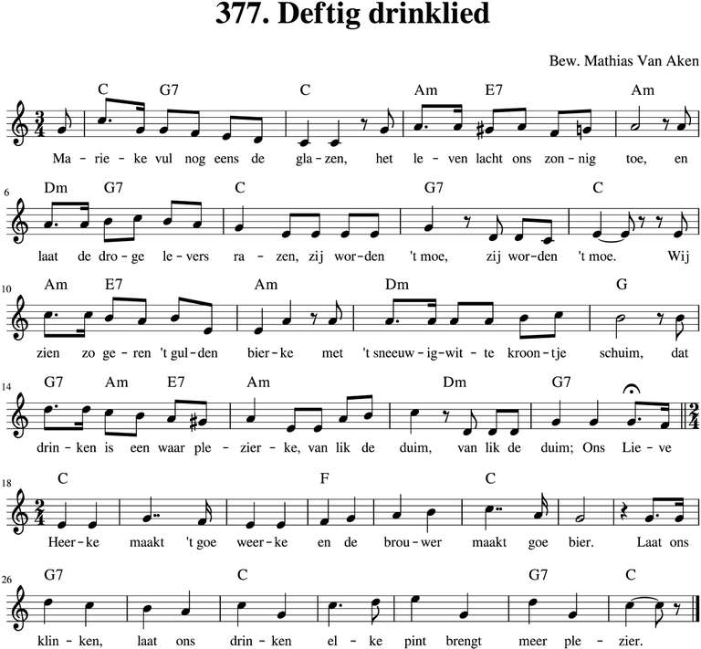
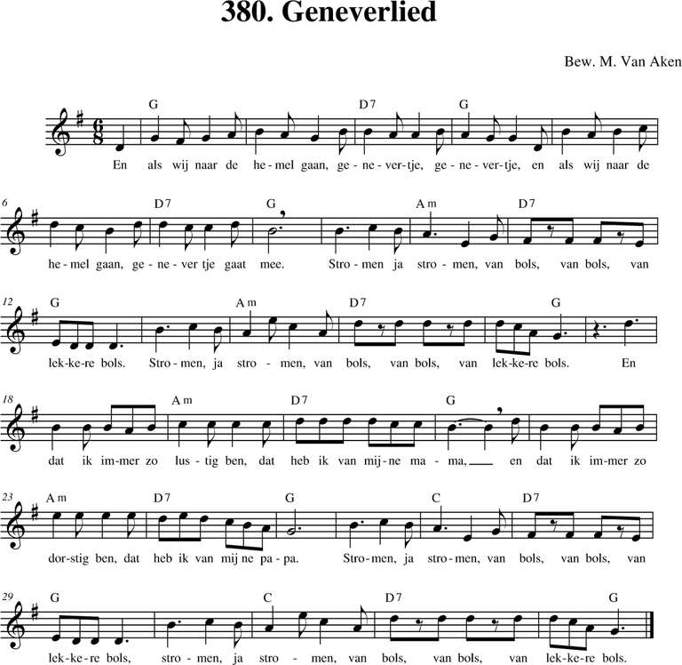
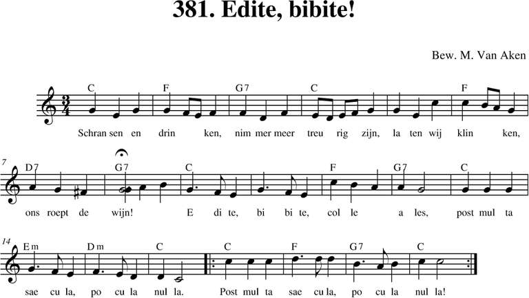
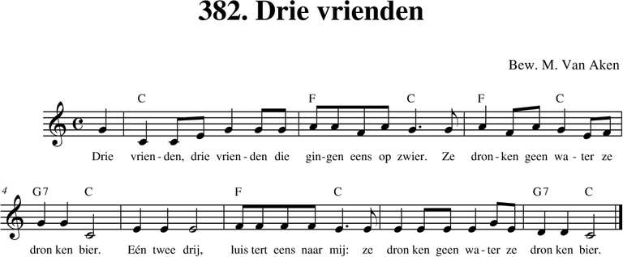

Menu
Bladeren
Alle liederen
p. 1-99
p. 100-199
p. 200-299
p. 300-399
p. 400-499
p. 500 e.v.
Taal
Nederlands
Frans
Engels
Duits
Latijn
Zuid-Afrikaans
Personen
Albrecht Rodenbach
Armand Preud'homme
Emiel Hullebroeck
Eugeen De Ridder
Jozef Simons
Philipp Silcher
René De Clercq
Stephen Foster
Meer...
Thema
Clubliederen
Ceremonies
Studentenleven
Historiek
Volk en land
Verleden
Bezinning
Were di
Pintjedrinken
Minne
Stemming en luim
NIEUWS
thema
Pintjedrinken
(26)
372. Minnedrank
30/12/2018
373. Pintje drinken
12/12/2018

374. Cantilena Potatoria
12/12/2018
375. Goed besluit
30/12/2018

377. Deftig drinklied
09/03/2019
379. Het zwartbruine bier
12/12/2018
379. Tsjechisch Drinklied
12/12/2018

380. Geneverlied
30/12/2018
381. 't Hermenieke van Bergeijk
08/03/2019

381. Edite bibite
30/12/2018

382. Drie vrienden
30/12/2018
Volgende